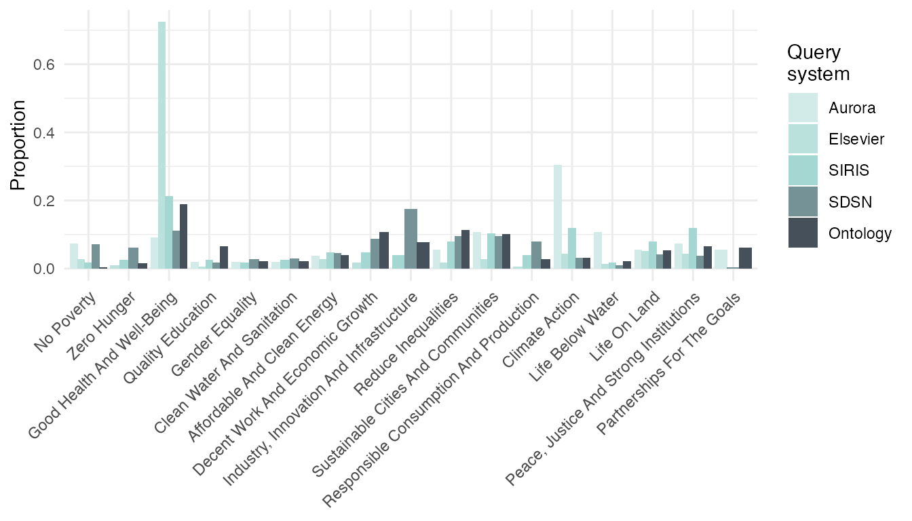
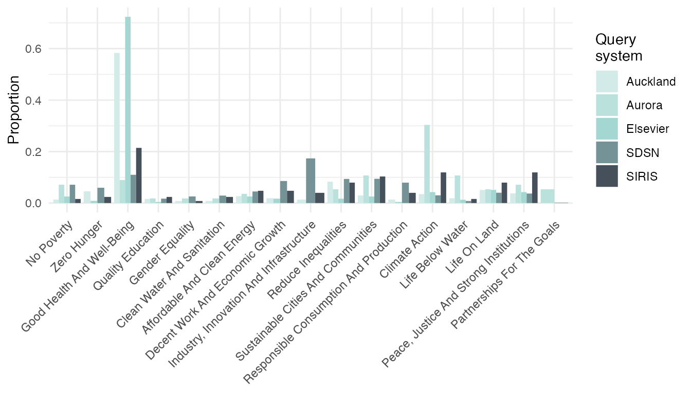

vignettes/text2sdg.Rmd
text2sdg.RmdThe United Nations’ Sustainable Development Goals (SDGs) have become
an important guideline for organizations to monitor and plan their
contributions to social, economic, and environmental transformations.
Existing approaches to identify efforts addressing each of the 17 goals
rely on economic indicators or, in the case of academic output, on
search engines of academic databases. text2sdg is the first
open source, multi-system tool to detect SDGs in text.
The text2sdg package consists of five functions:
detect_sdg(), detect_sdg_systems(),
detect_any(), plot_sdg(), and
crosstab_sdg(). The function detect_sdg()
carries out the detection of SDGs in text using a trained machine
learning model, whereas detect_sdg_systems() does so using
up to six different query systems. The function
detect_any() enables search for custom search queries.
Finally, the functions plot_sdg() and
crosstab_sdg() help visualize and analyze the resulting SDG
matches.
detect_sdg()
The detect_sdg() function identifies SDGs in texts that
are provided via the text argument. Inputs to
text must either be a character vector or an object of
tCorpus from package corpustools.
text is the only non-default argument of the function,
which means that the function can be run with only the texts as input.
The output of the function is a tibble with one row per
match including the following columns (and types):
document (factor) - index of element in
the character vector or corpus supply for text
sdg (character) - labels indicating the
matched SDGssystem (character) - the query system that
produced the matchhit (numeric) - running index of
matchesThe detect_sdg() function implements a ensemble model
based on a random forest architecture that pools the predictions of six
labeling systems generated using detect_sdg_systems() and
also considers text length. The ensemble model can be run for any subset
of the 17 SDGs by using the sdgs argument. Our research
shows that the ensemble model implemented by detect_sdg()
outperforms any individual labeling system and the OSDG tool developed
by the UN SDG AI Lab (Wulff, Meier, & Mata, 2023).
The example below runs the detect_sdg() function for the
projects data set included in the package and prints the
results. The data set is a character vector containing 500 descriptions
of randomly selected University of Basel research projects that were
funded by the Swiss National Science Foundation
(https://p3.snf.ch). The analysis
produced a total of 62 matches.
# detecting SDGs in projects
hits_default <- detect_sdg(projects)
hits_defaultdetect_sdg_systems()
The detect_sdg_systems() function generates SDG labels
by using up to six different SDG labeling systems. The function works
similarly to detect_sdg() but has additional arguments to
control which systems are run and the aggregation of the output. The
output is a tibble with one row per match including the
following columns (and types):
document (factor) - index of element in
the character vector or corpus supply for text
sdg (character) - labels indicating the
matched SDGssystem (character) - the query system that
produced the matchquery_id (integer) - identifier of query
in the query systemfeatures (character) - words in the
document that were matched by the queryhit (numeric) - running index of matches
for each query systemThe example below runs the detect_sdg_systems() function
for the projects data. The analysis produced a total of
835 matches using the four default query systems Aurora,
Elsevier, Auckland, and SIRIS.
# detecting SDGs in projects
hits_default <- detect_sdg_systems(projects)
hits_defaultBy default sdg_detect_systems() runs the four query
systems, Aurora, Elsevier, Auckland, and SIRIS. Using the function’s
system argument the user can control which systems are run.
There are two additional query systems that can be selected, SDSN and
SDGO. These two systems are much simpler and less restrictive than the
former four as they only rely on basic keyword matching, whereas the
four default systems are based on more complex search queries. As a
result, the four default systems are more specific but also more prone
to misses, whereas the two optional systems are more sensitive but also
more prone to false alarms. Our research suggests that the four default
systems are likely more accurate in balanced datasets including
SDG-related and SDG-unrelated content (Wulff, Meier, & Mata, 2023).
More information about the systems can be gathered from the help files
of the respective query data frames, aurora_queries,
elsevier_queries, auckland_queries,
siris_queries, sdsn_queries, and
sdgo_queries.
The example below runs the detect_sdg_systems() on the
projects using all query systems, including the two
keyword-based systems. The resulting tibbles reveal that
Aurora is most conservative (60 hits), followed by SIRIS (166), Elsevier
(235), Auckland (374), and then by large margin the two keyword-based
systems SDSN (2,589) and SDGO (3,629). Note that the high numbers for
the two keyword-based systems imply that, on average, 5 and 7 SDGs,
respectively, are identified per document.
# detecting SDGs using all query systems
hits_all <- detect_sdg_systems(projects,
system = c("Aurora", "Elsevier", "Auckland", "SIRIS", "SDSN", "SDGO")
)
#> Running Aurora
#> Running Elsevier
#> Running Auckland
#> Running SIRIS
#> Running SDSN
#> Running SDGO
# count hits of systems
table(hits_all$system)
#>
#> Auckland Aurora Elsevier SDGO SDSN SIRIS
#> 374 60 235 3629 2589 166By default the detect_sdg() and
detect_sdg_systems() will try to detect all 17 SDGs.
However, the user can limit the set of SDGs sought in text using the
sdgs argument, which takes a numeric vector with integers
in [1,17] as input. When using the detect_sdg_systems()
function, the user should note that Elsevier, SIRIS and Auckland contain
queries only for the first 16 SDGs, exluding queries for goal 17 -
Global Partnerships for the Goals.
The example below runs the detect_sdg_systems() function
only for SDGs 1, 2, 3, 4, and 5.
# detecting only for SDGs 1 to 5
hits_sdg_subset <- detect_sdg_systems(projects, sdgs = 1:5)
#> Running Aurora
#> Running Elsevier
#> Running Auckland
#> Running SIRIS
hits_sdg_subset
#> # A tibble: 489 × 6
#> document sdg system query_id features hit
#> <fct> <chr> <chr> <int> <chr> <int>
#> 1 1 SDG-03 Auckland 3 tuberculosis, human, tuberculosis, d… 1
#> 2 1 SDG-03 Elsevier 3 tuberculosis, human, tuberculosis, d… 1
#> 3 2 SDG-03 Auckland 3 SARs 2
#> 4 3 SDG-03 Auckland 3 immunology, medicine 3
#> 5 6 SDG-03 Auckland 3 cancer 4
#> 6 6 SDG-03 Elsevier 3 cancer 2
#> 7 8 SDG-03 Auckland 3 epidemics, epidemics, vaccine 5
#> 8 8 SDG-03 Elsevier 3 vaccine 3
#> 9 9 SDG-03 Auckland 3 primary, care, primary, care, Primar… 6
#> 10 12 SDG-03 Auckland 3 epidemics 7
#> # ℹ 479 more rowsBy default, detect_sdg_systems() returns matches at the
level of query. If a system has multiple queries for a single SDG, the
output can include multiple hits (and rows) per document and system.
Separating hits by queries can be useful because different queries
typically capture different aspects of a given SDGs, which will be
revealed through the keywords that were matched by the queries. These
keyword matches are shown in the column features and,
hence, we refer to thsi type of output as "features". If
the user is not interested in separating matches by queries and only
cares about matches at the level of documents, a reduced output can be
selected by setting the output argument to
"documents". In this case, the
detect_sdg_systems() returns a tibble that
includes only distinct matches of document,
system, and sdg combinations, concatenates the
values of features into a single character string, and
drops the column query_id.
The example below shows the alternative output resulting from setting
output = "documents".
# return documents output format
detect_sdg_systems(projects, output = "documents")
#> Running Aurora
#> Running Elsevier
#> Running Auckland
#> Running SIRIS
#> # A tibble: 791 × 5
#> document sdg system n_hit features
#> <fct> <chr> <chr> <int> <chr>
#> 1 1 SDG-03 Auckland 1 tuberculosis, human, tuberculosis, disease
#> 2 1 SDG-03 Elsevier 1 tuberculosis, human, tuberculosis, disease
#> 3 2 SDG-03 Auckland 1 SARs
#> 4 3 SDG-03 Auckland 1 immunology, medicine
#> 5 6 SDG-03 Auckland 1 cancer
#> 6 6 SDG-03 Elsevier 1 cancer
#> 7 8 SDG-03 Auckland 1 epidemics, epidemics, vaccine
#> 8 8 SDG-03 Elsevier 1 vaccine
#> 9 9 SDG-03 Auckland 1 primary, care, primary, care, Primary, care, …
#> 10 12 SDG-03 Auckland 1 epidemics
#> # ℹ 781 more rowsBy default the detect_sdg() and
detect_sdg_systems() function prints messages to
communicate the progress of the underlying SDG detection process, which
can take several minutes. To suppress these messages, the user can set
the verbose argument to FALSE.
detect_any()
The detect_any() function permits specification of
custom query systems. The function operates similarly to
detect_sdg_systems(), but it requires an additional
argument queries that specifies the queries to be employed.
The queries argument expects a tibble with the
following columns:
system (character) - names used to label
query systems.queries (character) - queries used in
search.sdg (integer) - mapping of queries to
SDGs.The queries in the custom query set can be Lucene-style queries
following the syntax of the corpustools package. See
vignette("corpustools"). This is illustrated in the example
below. First, a tibble of three queries is defined that includes a
single system and three queries that are mapped onto two sdgs, 3 and 7.
The first query represents a simple keyword search, whereas queries 2
and 3 are proper search queries using logical operators.
# definition of query set
my_queries <- tibble::tibble(
system = "my_system",
query = c("theory", "analysis OR analyses OR analyzed", "study AND hypothesis"),
sdg = c(3, 7, 7)
)
# return documents output format
detect_any(
text = projects,
system = my_queries
)
#> # A tibble: 280 × 6
#> document sdg system query_id features hit
#> <fct> <chr> <chr> <dbl> <chr> <int>
#> 1 2 SDG-07 my_system 2 analysis 62
#> 2 4 SDG-07 my_system 2 analysis 189
#> 3 8 SDG-07 my_system 2 analyses, analysis 267
#> 4 9 SDG-07 my_system 2 analysis 274
#> 5 10 SDG-07 my_system 2 analysis, analyses 1
#> 6 11 SDG-07 my_system 2 analysis 6
#> 7 13 SDG-07 my_system 3 hypothesis, study 19
#> 8 15 SDG-07 my_system 2 analysis 28
#> 9 15 SDG-07 my_system 3 study, hypothesis 29
#> 10 16 SDG-07 my_system 2 analyzed 39
#> # ℹ 270 more rowsplot_sdg()
To visualize the hits produced by the detect_*
functions, the text2sdg package provides the function
plot_sdg(). The function produces barplots illustrating
either the hit frequencies produced by the different query systems. It
is built on the ggplot2 package, which provides high levels
of flexibility for adapting and extending its visualizations.
By default plot_sdg() produces a stacked barplot of
absolute hit frequencies. Frequencies are determined on the document
level for each system and SDGs present in the tibble that
was provided to the function’s hits argument. If multiple
hits per document, system and SDG combination exist, the function
returns a message of how many duplicate hits have been suppressed.
The example below produces the default visualization for the hits of
all five systems. Since the object was created with
"output = features", the function informs that a total of
2490 duplicate hits were removed.
# show stacked barplot of hits
plot_sdg(hits_all)
#> 2511 duplicate hits removed. Set remove_duplicates = FALSE to retain duplicates.
The plot_sdg() function has several arguments that
permit adjustment of the visualization. The systems and
sdgs arguments can be used to visualize subsets of systems
and/or SDGs. The normalize argument can be used to
normalize the absolute frequency by the number of documents
(normalize = "documents") or by the total number of hits
within a system (normalize = "systems"). The
color argument can be used to adapt the color set used for
the systems. The sdg_titles argument can be used to add the
full titles of the SDGs. The remove_duplicates argument can
be used to retain any duplicate hits of document, system, and SDG
combinations. Finally, the ... arguments can be used to
pass on additional arguments to the geom_bar() function
that underlies detect_sdg_systems().
The example below uses some of the available arguments to make
adjustments to the default visualization. With
normalize = "systems" and position = "dodge",
an argument passed to geom_bar(), it shows the proportion
of SDG hits per system with bars presented side-by-side rather than
stacked. Furthermore, due to sdg_titles = TRUE the full
titles are shown rather than SDG numbers.
# show normalized, side-by-side barplot of hits
plot_sdg(hits_all,
sdg_titles = TRUE,
normalize = "systems",
position = "dodge"
)
#> 2511 duplicate hits removed. Set remove_duplicates = FALSE to retain duplicates.
ggplot2
Because plot_sdg() is implemented using
ggplot2, visualizations can easily be extended using
functions from the ggplot2 universe. The example below
illustrates this. Using the facet_wrap function separate
panels are created, one for each system, that show the absolute
frequencies of hits per SDG.
# show system hits in separate panels
plot_sdg(hits_all) +
ggplot2::facet_wrap(~system, ncol = 1, scales = "free_y")
#> 2511 duplicate hits removed. Set remove_duplicates = FALSE to retain duplicates.
crosstab_sdg()
To assist the user in understanding the relationships among SDGs and
query systems, the text2sdg package provides the
crosstab_sdg() function. The function takes as input the
tibble of hits produced by any of the detect functions and
compares hits between either systems or SDGs. Comparing hits by system
means that correlations are determined across all documents and all SDGs
for every pair of systems to produce a fully crossed table of system
correlations. Conversely, comparing hits by SDG means that correlations
are determined across all documents and all systems for every pair of
SDGs to produce a fully crossed table of SDG correlations.
By default the crosstab_sdg() function compares
systems, which is illustrated below for the hits for all
five systems. Note that the crosstab_sdg() function only
considers distinct combinations of documents, systems, and SDGs implying
that the output type of detect_sdg_systems() does not
matter; it will automatically treat the hits as if they had been
produced using output = documents.
The analysis reveals two noteworthy results. First, correlations between systems are overall rather small. Second, query systems are more similar to systems of the same type, i.e., query or keyword-based.
# evaluate correspondence between systems
crosstab_sdg(hits_all) %>% round(2)
#> Auckland Aurora Elsevier SDGO SDSN SIRIS
#> Auckland 1.00 0.26 0.75 0.34 0.27 0.32
#> Aurora 0.26 1.00 0.24 0.14 0.12 0.30
#> Elsevier 0.75 0.24 1.00 0.29 0.23 0.27
#> SDGO 0.34 0.14 0.29 1.00 0.35 0.19
#> SDSN 0.27 0.12 0.23 0.35 1.00 0.19
#> SIRIS 0.32 0.30 0.27 0.19 0.19 1.00When crosstab_sdg() evaluates the correspondence between
query systems it does not distinguish between hits of different SDGs.
Correlations for individual SDGs could be different from the overall
correlations, and it is likely that they are higher, on average. To
determine the correspondence between query systems for individual SDGs,
the user can use the sdgs argument. For instance,
sdgs = 1 will only result in a comparison of systems using
only hits of SDG 1.
The crosstab_sdg() can also be used to analyze, in a
similar fashion, the correspondence between SDGs. To do this, the
compare argument must be set to "sdgs". Again,
correlations are calculated for distinct hits, while ignoring, in this
case, the systems from which the hits originated.
The example below analyzes the correspondence of all SDGs across all
systems. The resulting cross table reveals strong correspondences
between certain pairs of SDGs, such as, for instance, between
SDG-01 and SDG-02 or between
SDG-07 and SDG-13.
# evaluate correspondence between systems
crosstab_sdg(hits_all, compare = "sdgs") %>% round(2)
#> SDG-01 SDG-02 SDG-03 SDG-04 SDG-05 SDG-06 SDG-07 SDG-08 SDG-09 SDG-10
#> SDG-01 1.00 0.44 0.04 0.06 0.13 0.18 0.08 0.17 0.32 0.19
#> SDG-02 0.44 1.00 0.10 0.07 0.06 0.16 0.12 0.15 0.28 0.14
#> SDG-03 0.04 0.10 1.00 0.18 0.15 0.03 0.00 0.18 0.13 0.29
#> SDG-04 0.06 0.07 0.18 1.00 0.14 0.08 0.09 0.18 0.16 0.26
#> SDG-05 0.13 0.06 0.15 0.14 1.00 0.11 0.05 0.10 0.15 0.20
#> SDG-06 0.18 0.16 0.03 0.08 0.11 1.00 0.19 0.17 0.19 0.11
#> SDG-07 0.08 0.12 0.00 0.09 0.05 0.19 1.00 0.14 0.28 0.10
#> SDG-08 0.17 0.15 0.18 0.18 0.10 0.17 0.14 1.00 0.37 0.33
#> SDG-09 0.32 0.28 0.13 0.16 0.15 0.19 0.28 0.37 1.00 0.31
#> SDG-10 0.19 0.14 0.29 0.26 0.20 0.11 0.10 0.33 0.31 1.00
#> SDG-11 0.22 0.21 0.17 0.20 0.16 0.32 0.22 0.28 0.33 0.29
#> SDG-12 0.24 0.26 0.07 0.06 0.07 0.29 0.29 0.15 0.31 0.14
#> SDG-13 0.06 0.07 -0.04 0.04 0.02 0.21 0.37 0.07 0.15 0.04
#> SDG-14 0.05 0.08 0.01 0.02 0.02 0.14 0.14 0.09 0.09 0.08
#> SDG-15 0.08 0.16 0.10 0.05 0.03 0.21 0.13 0.18 0.21 0.12
#> SDG-16 0.14 0.10 0.12 0.25 0.33 0.13 0.05 0.23 0.18 0.25
#> SDG-17 -0.01 0.02 0.22 0.25 0.05 0.05 0.00 0.15 0.05 0.21
#> SDG-11 SDG-12 SDG-13 SDG-14 SDG-15 SDG-16 SDG-17
#> SDG-01 0.22 0.24 0.06 0.05 0.08 0.14 -0.01
#> SDG-02 0.21 0.26 0.07 0.08 0.16 0.10 0.02
#> SDG-03 0.17 0.07 -0.04 0.01 0.10 0.12 0.22
#> SDG-04 0.20 0.06 0.04 0.02 0.05 0.25 0.25
#> SDG-05 0.16 0.07 0.02 0.02 0.03 0.33 0.05
#> SDG-06 0.32 0.29 0.21 0.14 0.21 0.13 0.05
#> SDG-07 0.22 0.29 0.37 0.14 0.13 0.05 0.00
#> SDG-08 0.28 0.15 0.07 0.09 0.18 0.23 0.15
#> SDG-09 0.33 0.31 0.15 0.09 0.21 0.18 0.05
#> SDG-10 0.29 0.14 0.04 0.08 0.12 0.25 0.21
#> SDG-11 1.00 0.32 0.17 0.12 0.18 0.26 0.18
#> SDG-12 0.32 1.00 0.13 0.10 0.19 0.09 0.08
#> SDG-13 0.17 0.13 1.00 0.28 0.28 0.01 0.00
#> SDG-14 0.12 0.10 0.28 1.00 0.21 -0.01 0.01
#> SDG-15 0.18 0.19 0.28 0.21 1.00 0.07 0.11
#> SDG-16 0.26 0.09 0.01 -0.01 0.07 1.00 0.18
#> SDG-17 0.18 0.08 0.00 0.01 0.11 0.18 1.00